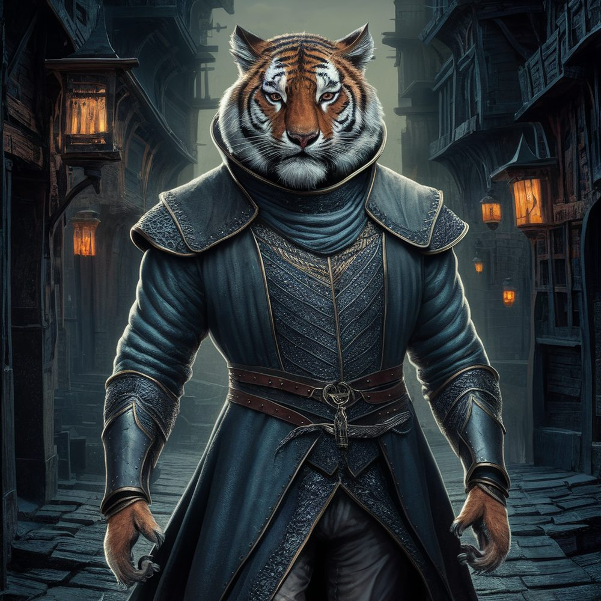

The Kin
Values: Loyalty, Care
Symbol: A moon, black on grey
Characteristic class: Rogue
The Kin are a secretive international crime syndicate — or so they appear to the rest of the world. In truth, they are a secret society of lycanthropes.
True Nature
Unlike the other major factions, the Kin’s true nature is hidden. Even those with access to the best intelligence networks know only that lycanthropes are often associated with organised crime. No outsider is aware that there is a cohesive international lycanthropic organisation.
The vast majority of societies hate and fear lycanthropes and usually execute them immediately. From the perspective of the Kin, they are forced to defend one another from the indifference, duplicity, and oppression of the rest of the world, and see their activities as principally defensive or retaliatory.
History
The Kin began as a mutual protection society for lycanthropes, for which secrecy was a necessity for survival. As the group grew, they discovered that their secret network could also be useful for organised crime. The temptation was irresistible, easily justified as revenge against mainstream societies or as a way of acquiring resources for the protection of their kind.
Today, criminal profit has arguably become the primary goal. However, senior members who retain the group’s original idealistic vision remain, and this is the major source of tension within the organisation.
Organisation
The Kin operate a cell-structure command hierarchy, terminating in a family council. Entry-level recruits are unaware of the organisation’s lycanthropic secret. Operatives must submit to lycanthropy to progress through the ranks.
Not all lycanthropes are members of the Kin, but most lycanthropes living functional lives in humanoid societies are. Kin operatives take various lycanthropic forms — wolves, bears, and more exotic animals including tigers.

The Hidden Town
One town is unique in all of Moonrise: a place where lycanthropes live openly. The town is run by the Kin, and those non-lycanthrope residents are in sympathy or service to them. The secret is carefully guarded by a dense network of operatives in the surrounding area who warn of approaching outsiders. The Kin usually find a way to turn outsiders away without bloodshed, but if they must be admitted, the town’s residents are always well warned.
See also
- The Veil — another secretive faction, but with very different methods and goals